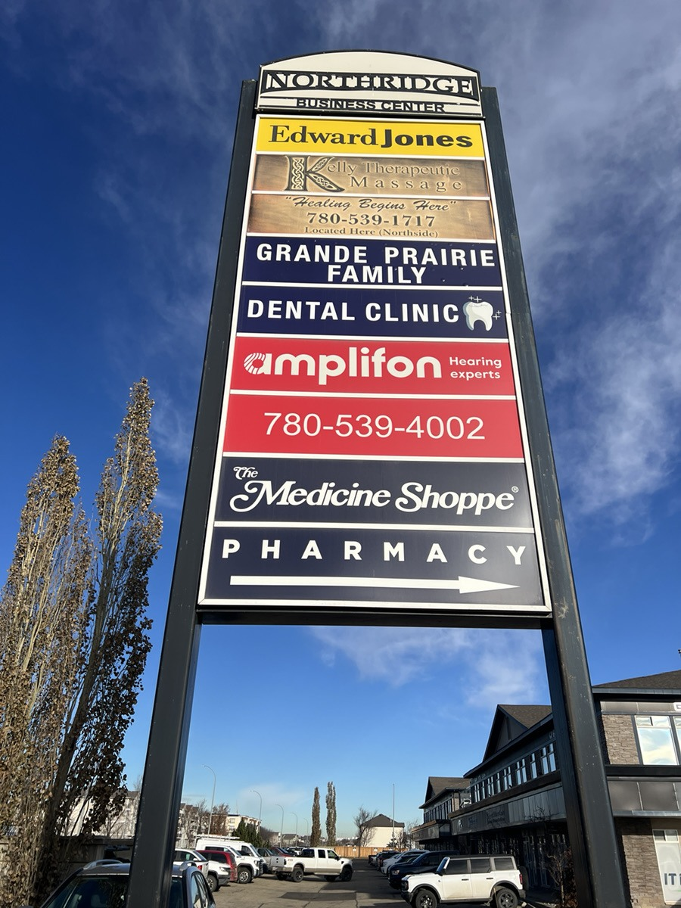

Be seen from the street.
Put your name and logo on a roadside panel so people can spot your business before they reach the building.
Both signs. One development.
For businesses in Northridge Business Centre: vacant panels are highlighted below.
Contact us to confirm current panel availability and pricing.
Explore the development · Grande Prairie
For businesses located within Northridge Business Centre. Make your business easier to find at Northridge Business Centre. A roadside sign helps customers recognize the property before they reach your door.
Your selected spot
Or call 780-978-1290

Around the development
Explore sign locations on 120 Avenue and 102 Street. Put your name and logo in view and help visitors recognize Northridge Business Centre when they arrive.
10126 120 Avenue · 11709 102 Street · Grande Prairie, Alberta
Standard 2′ × 8′ panel · Both sides
Includes both sides of one standard panel space. Contact us for current pricing and details about combined spaces, artwork, and installation.
Put your name and logo on a roadside panel so people can spot your business before they reach the building.
Give first-time visitors a clear landmark to look for when they’re finding your business.
These pylon signs serve businesses located within Northridge Business Centre. Ask about space for your business at this development.
Let’s get you on the sign
Give your business a place on the Northridge Business Centre sign and make it easier for customers to spot you from the street. Ready to see your name up there? Get in touch and we’ll help you find an available panel and talk through artwork, installation, and getting started.
Standard backlit panels are 2′ high × 8′ wide. Two adjacent panels can create a 4′ × 8′ space; three can create a 6′ × 8′ space. Configurations depend on adjacent panel availability. Ask about artwork, installation, and lease details.